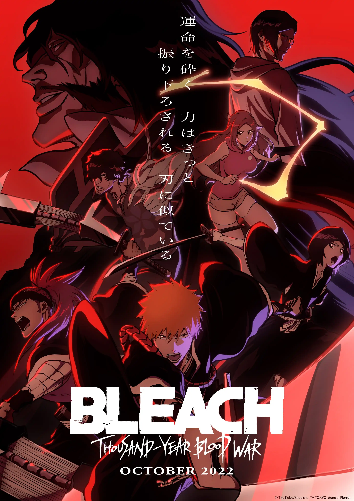

Bleach Thousand Years Blood War
Ichigo Kurosaki, um substituto de Ceifador de Almas, luta contra Hollows com a ajuda de seus amigos Orihime, Sado e Uryuu. Sua rotina é interrompida pelo retorno de Yhwach, o rei Quincy, que pretende destruir o mundo humano e a Sociedade das Almas. Yhwach lança invasões em ambas as dimensões, forçando Ichigo e seus aliados a unirem forças com antigos inimigos para combater a ameaça. A missão é impedir que Yhwach cause a destruição total de ambos os mundos.